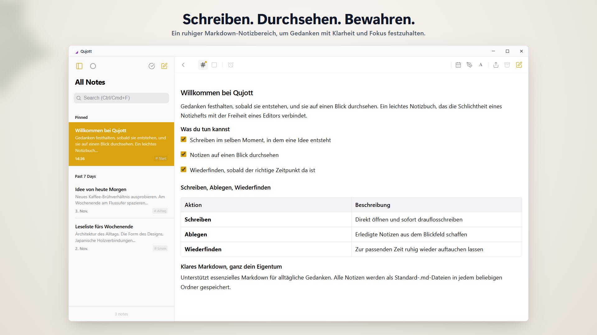
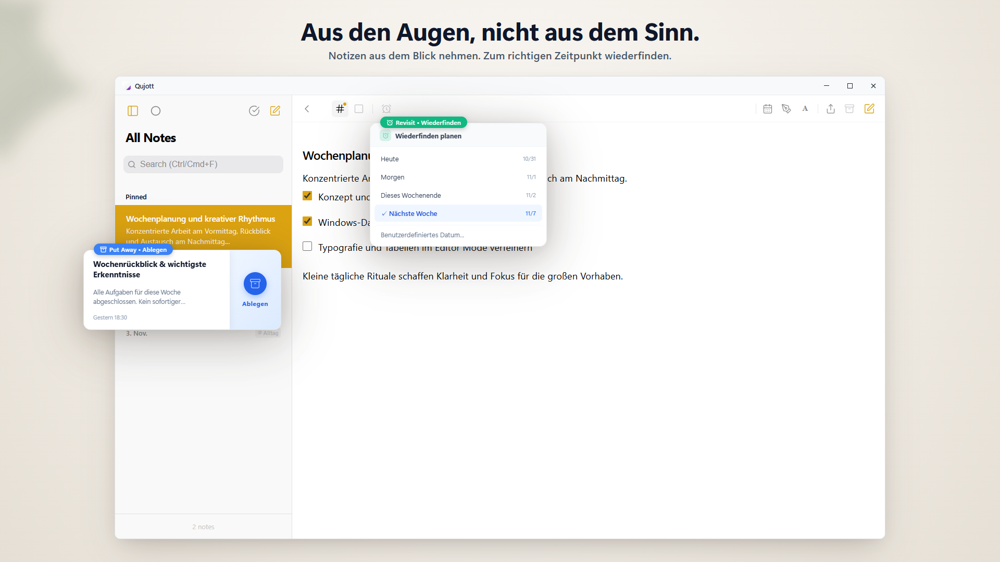
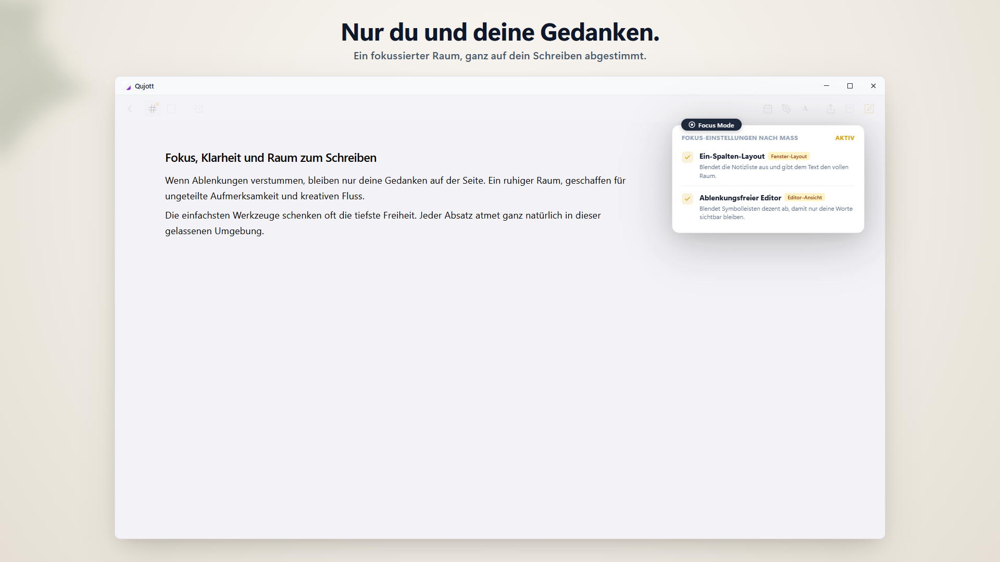
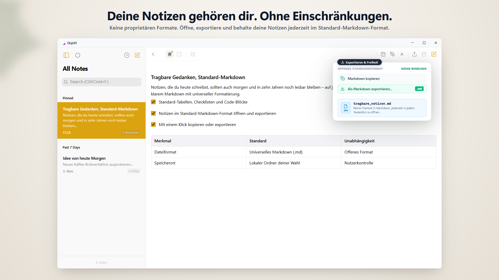
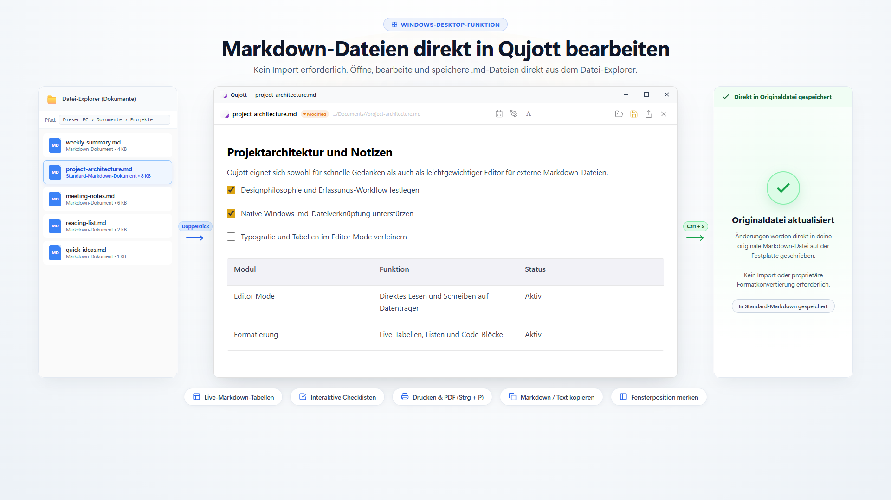
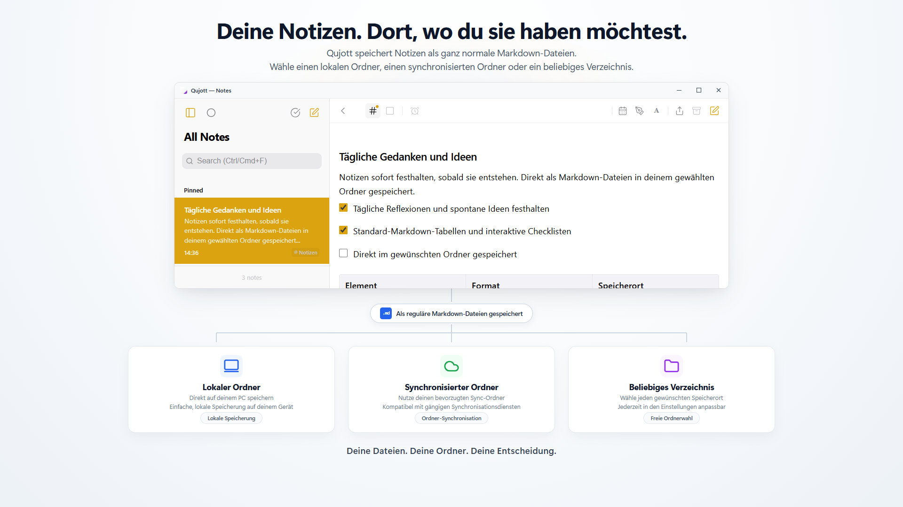
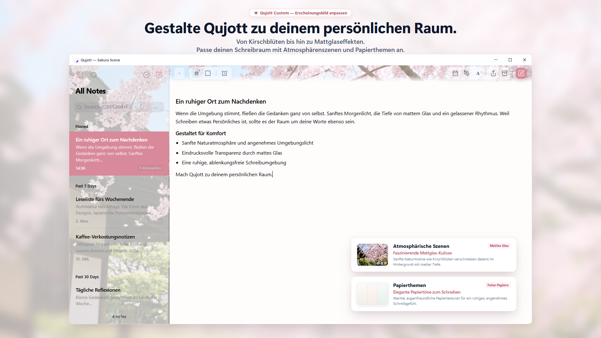

Qujott
Ideen sofort festhalten,
und jederzeit entspannt wiederfinden.
Qujott vereint die Schlichtheit eines Notizblocks mit der Vielseitigkeit eines Texteditors in einem leichten digitalen Notizbuch.
Später sortieren. Gedanken nah bei sich behalten.
Unterstützt Standard-Markdown. Speichere und bearbeite Notizen als reine Textdateien am Ort deiner Wahl.

Ein ruhiger Zwei-Spalten-Bereich, der Gedanken und Notizliste stets im Blick behält
Wie ein Papierblock neben deiner Tastatur.
Qujott ist weder eine überladene Datenbank noch ein kompliziertes Aufgabenwerkzeug.
Wie ein echter Papiernotizblock auf dem Schreibtisch dient es einem einzigen Zweck: sofort drauflosschreiben, wenn ein Gedanke aufkommt.
Kein Zwang zu Ordnerstrukturen oder Verschlagwortung vor dem Schreiben.
Gedanken einfach festhalten und griffbereit halten. Sortieren kannst du später in Ruhe.
Notizen sanft ablegen und zur rechten Zeit wiedersehen.
Notiz fertig? Lege sie beiseite (Put Away), ohne sie zu löschen, um den Blick frei zu halten.
Mit Revisit lässt du Notizen heute, morgen oder nächste Woche wieder oben erscheinen. Ohne laute Wecker – eine natürliche Rückkehr zur passenden Zeit.

Notizen beiseitelegen für klare Sicht und zur passenden Zeit wiederbegegnen
Vollkommen in deine Gedanken eintauchen.
Wechsle in den einspaltigen Focus Mode, um Seitenleisten und Ablenkungen auszublenden.
Eine ruhige, minimalistische Schreibumgebung, geschaffen für ungestörtes Nachdenken und Verfassen.

Der Focus Mode blendet alles Überflüssige aus für pure Konzentration aufs Wort
Deine Worte gehören dir.
Alle Notizen in Qujott werden als Standard-Markdown-Dateien (.md) gespeichert.
Kein proprietäres Format, keine Bindung. Öffne, bearbeite und sichere deine Notizen jederzeit in jedem Texteditor.

Notizen als Standard-Markdown (.md). Volle Freiheit beim Lesen, Bearbeiten und Exportieren
Bestehende Markdown-Dateien direkt öffnen und bearbeiten.
Öffne vorhandene Markdown-Dateien direkt in Qujott, bearbeite sie und speichere Änderungen mit Strg+S in der Originaldatei.
Kein Import oder Formatwechsel erforderlich. Nutze Qujott als deinen leichten Markdown-Editor im Alltag.

Markdown-Dateien direkt in Qujott öffnen, bearbeiten und im Original speichern (Editor Mode)
Du bestimmst, wo deine Notizen leben.
Wähle ein beliebiges Verzeichnis auf deinem PC: Lokale Ordner, bestehende Cloud-Ordner oder externe Laufwerke.
Du kannst Qujott nutzen, ohne ein Cloud-Konto erstellen oder dich anmelden zu müssen.

Freie Wahl des Speicherorts: Lokale Ordner, Cloud-Synchronisation oder externe Laufwerke
Gestalte deinen persönlichen Schreibraum.
Gestalte deine Umgebung mit stimmungsvollen Atmosphären-Szenen (wie Sakura), Milchglaseffekten und Papierthemen (Qujott Pro, Einmalkauf).
Mit der UI-Skalierung (80 % bis 160 %) passt du die Anzeige optimal an deinen Monitor an.

Ein Schreibraum, der sich vertraut anfühlt. Gestalte ihn mit Szenen und UI-Skalierung.